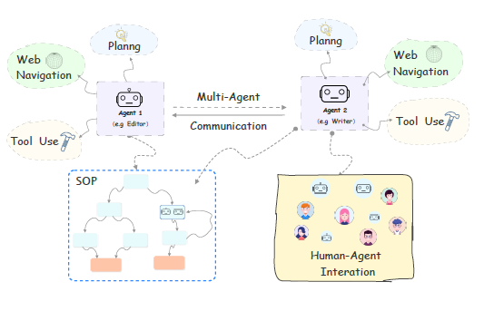

The goal of this project is to develop an advanced multi-agent system using Large Language Models (LLMs) that
leverages a language graph architecture and Retrieval-Augmented Generation (RAG) with language caching to solve complex NLP tasks. The system will:
1. Implement a dynamic multi-agent framework where each agent is a specialized LLM trained for specific NLP tasks.
2. Utilize a language graph to efficiently represent and process linguistic information, enabling complex
reasoning and knowledge integration.
3. Incorporate RAG with language caching to enhance the system's ability to retrieve and utilize relevant
information efficiently.
4. Develop a coordination mechanism for agent interaction, task delegation, and collaborative problem-solving.
5. Create a unified interface for submitting complex NLP queries and tasks to the multi-agent system.
6. Implement a result synthesis module to combine outputs from multiple agents into coherent responses.
7. Ensure scalability to handle large-scale language processing tasks and diverse query types.
8. Incorporate explainability features to provide insight into the system's decision-making process and
agent interactions.
Key components and technologies:
1. Multi-Agent System:
- Implement using frameworks like Ray or Akka for distributed computing
- Develop specialized agents for tasks such as named entity recognition, sentiment analysis, summarization
and question answering
- Use meta-learning techniques to enable agents to adapt to new tasks quickly
2. Language Graph:
- Implement using graph databases like Neo4j or Amazon Neptune
- Develop algorithms for efficient information representation and retrieval within the graph
- Incorporate techniques from knowledge graphs and semantic networks
3. Large Language Models:
- Utilize state-of-the-art LLMs such as GPT-3, BERT, or T5
- Fine-tune models for specific tasks using techniques like prompt engineering and few-shot learning
4. Retrieval-Augmented Generation (RAG):
- Implement RAG using frameworks like Hugging Face's RAG model
- Develop a language caching system to store and quickly retrieve relevant information
- Integrate vector databases like Faiss or Annoy for efficient similarity search
5. Coordination and Communication:
- Develop a central controller for managing agent interactions and task allocation
- Implement message passing protocols for inter-agent communication
- Use reinforcement learning for optimizing agent coordination strategies
6. Natural Language Processing:
- Utilize libraries such as spaCy, NLTK, or Stanford CoreNLP for fundamental NLP tasks
- Implement advanced NLP techniques like zero-shot learning and few-shot learning
7. Evaluation and Optimization:
- Develop comprehensive evaluation metrics for individual agents and the overall system
- Implement online learning mechanisms for continuous system improvement
The end product will be a cutting-edge, flexible system capable of tackling complex NLP tasks through the
coordinated efforts of multiple specialized agents, enhanced by a language graph architecture and efficient
information retrieval through RAG and language caching.
 Figure 1: Caption
The project will utilize a diverse range of datasets to train and evaluate the multi-agent system:
1. General Language Understanding:
- GLUE (General Language Understanding Evaluation) benchmark
- SuperGLUE for more challenging language understanding tasks
2. Question Answering:
- SQuAD (Stanford Question Answering Dataset)
- Natural Questions dataset
- TriviaQA for complex, trivia-style questions
3. Summarization:
- CNN/Daily Mail dataset
- XSum (Extreme Summarization) dataset
4. Named Entity Recognition:
- CoNLL-2003 dataset
- OntoNotes 5.0
5. Sentiment Analysis:
- IMDB Movie Reviews
- Twitter Sentiment Analysis Dataset
6. Machine Translation:
- WMT (Workshop on Machine Translation) datasets
7. Commonsense Reasoning:
- SWAG (Situations With Adversarial Generations) dataset
- CommonsenseQA
8. Dialogue Systems:
- MultiWOZ for task-oriented dialogues
- PersonaChat for open-domain conversations
9. Large-scale Knowledge Bases:
- Wikidata for building and populating the language graph
- ConceptNet for commonsense knowledge
10. Specialized Domain Datasets:
- Legal documents (e.g., LEDGAR dataset)
- Scientific papers (e.g., S2ORC - Semantic Scholar Open Research Corpus)
- Medical records (e.g., MIMIC-III, with appropriate permissions)
Students will need to ensure proper data handling, respecting licensing and usage rights for all datasets.
They should also consider creating synthetic datasets or augmenting existing ones to test specific aspects
of the multi-agent system and language graph interactions.
The development of a multi-agent LLM system with language graph and RAG capabilities addresses several critical
needs in the field of artificial intelligence and natural language processing:
1. Complex Task Solving: Enable tackling of intricate NLP tasks that require multiple specialized skills and knowledge integration.
2. Scalability and Efficiency: Improve the handling of large-scale language processing tasks through distributed computing and efficient information retrieval.
3. Knowledge Integration: Enhance the system's ability to combine information from various sources and domains using the language graph structure.
4. Adaptive Learning: Facilitate quick adaptation to new tasks and domains through the coordinated efforts of multiple specialized agents.
5. Explainability: Improve the interpretability of AI decision-making processes in complex language tasks.
6. Resource Optimization: Efficiently utilize computational resources by distributing tasks among specialized agents and leveraging cached information.
7. Advanced Reasoning: Enable more sophisticated reasoning capabilities by combining the strengths of multiple AI agents and knowledge structures.
8. Real-world Application: Develop a system capable of addressing practical, multi-faceted NLP challenges in areas such as research, business intelligence, and customer service.
By developing this advanced multi-agent system, students will contribute to the cutting-edge of AI and NLP research, potentially opening new avenues for more intelligent and capable language processing systems.
The project will be approached through several key steps:
1. Research and Planning:
- Study existing multi-agent systems, language graph implementations, and RAG techniques
- Define the architecture for the multi-agent system and language graph integration
- Plan the integration of RAG and language caching mechanisms
2. Multi-Agent System Development:
- Implement the core multi-agent framework
- Develop specialized agents for different NLP tasks
- Create the central controller for agent coordination
3. Language Graph Implementation:
- Design and implement the language graph structure
- Develop algorithms for knowledge representation and retrieval within the graph
- Integrate the language graph with the multi-agent system
4. Large Language Model Integration:
- Select and integrate appropriate LLMs for different agents
- Implement fine-tuning mechanisms for task-specific optimization
- Develop prompt engineering techniques for effective LLM utilization
5. RAG and Language Caching System:
- Implement the RAG model and integrate it with the multi-agent system
- Develop the language caching mechanism for efficient information retrieval
- Create algorithms for cache management and update
6. Agent Communication and Coordination:
- Develop protocols for inter-agent communication
- Implement task allocation and load balancing mechanisms
- Create collaborative problem-solving algorithms
7. Query Processing and Result Synthesis:
- Develop the query understanding and decomposition module
- Implement the result synthesis system to combine agent outputs
- Create the explanation generation module for system decisions
8. Performance Optimization:
- Implement distributed computing capabilities for scalability
- Optimize the language graph for fast querying and updates
- Enhance RAG performance through advanced indexing and retrieval techniques
9. Evaluation and Testing:
- Develop comprehensive evaluation metrics for the multi-agent system
- Conduct thorough testing on various NLP tasks and datasets
- Perform comparative analysis with existing state-of-the-art systems
10. Documentation and Deployment:
- Create detailed documentation for the system architecture and components
- Develop user guides and API documentation
- Prepare a deployment strategy, including cloud-based implementations
This is a rough timeline for the project:
- (2 Weeks) Research and Planning
- (4 Weeks) Multi-Agent System Development
- (3 Weeks) Language Graph Implementation
- (3 Weeks) Large Language Model Integration
- (3 Weeks) RAG and Language Caching System
- (2 Weeks) Agent Communication and Coordination
- (3 Weeks) Query Processing and Result Synthesis
- (3 Weeks) Performance Optimization
- (3 Weeks) Evaluation and Testing
- (2 Weeks) Documentation and Deployment
- (2 Weeks) Final Presentation and Project Wrap-up
Given the complexity and scope of this project, it is suitable for a team of 2-3 students. The multi-faceted nature of the system allows for effective task distribution, promoting collaborative learning and development across various aspects of AI, NLP, and distributed systems.
Several challenges may arise during the project:
1. Complexity of Integration: Ensuring seamless interaction between multiple agents, the language graph, and the RAG system.
2. Scalability: Managing computational resources effectively for large-scale language processing tasks.
3. Consistency: Maintaining coherence in outputs when combining results from multiple specialized agents.
4. Language Graph Efficiency: Designing an efficient graph structure that balances comprehensive knowledge representation with quick retrieval.
5. RAG Performance: Optimizing the retrieval process to provide relevant information without introducing significant latency.
6. Agent Specialization vs. Generalization: Striking the right balance between highly specialized agents and maintaining overall system flexibility.
7. Explainability: Developing meaningful explanations for the system's decisions, especially for complex multi-agent interactions.
8. Ethical Considerations: Ensuring the system respects privacy, avoids biases, and produces reliable outputs.
9. Real-time Performance: Achieving low-latency responses for interactive NLP applications.
10. Continuous Learning: Implementing mechanisms for the system to learn and improve from interactions without compromising stability.
11. Evaluation Complexity: Developing comprehensive metrics to assess the system's performance on diverse, multi-faceted NLP tasks.
12. Resource Intensive: Managing the computational and memory requirements of multiple LLMs, a language graph, and a RAG system.
Students will need to research and implement solutions to these challenges, which will be an integral part of the learning experience and contribute significantly to the project's innovation in the field of advanced NLP systems.